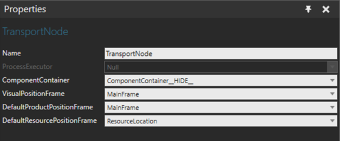

Transport node is a location where products can be routed in and out using Flow Editor.

| Name | Description |
| Name | Name of the transport node behavior |
| Process Executor | Process executor behavior to notify about the arriving and leaving of products. This can be also updated by assigning the TransportNode property on a Process executor. |
| ComponentContainer | The transport node reacts to products arriving and leaving
this container.
Note: you must associate a separate component container behavior even if the transport node is used in a motion point mode (as a processor, which attached to a path). |
| VisualPositionFrame | Frame feature that defines the visual position of the node. |
| DefaultProductPositionFrame | Frame feature that defines the default position used for products arriving to the transport node. |
| DefaultResourcePositionFrame | Frame feature that defines the default resource position used when transporting products in and out. |